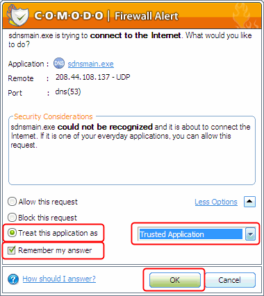
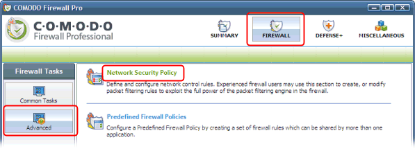
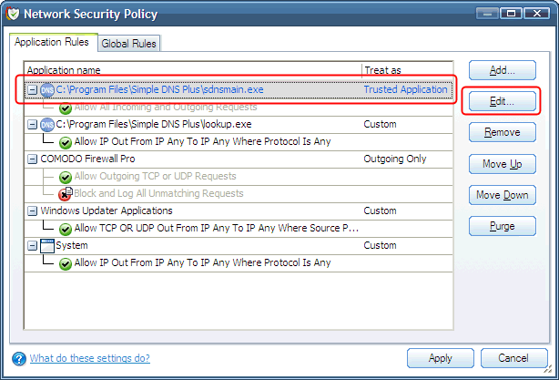
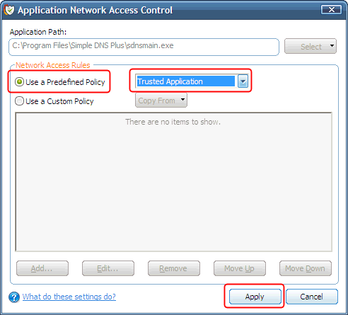

Comodo Firewall Pro is a product from Comodo - http://www.comodo.com
Comodo Firewall Pro monitors network traffic by application.
Simple DNS Plus consists of several executable module (applications) which each must be granted access to the Internet. These modules are:
- "Simple DNS Plus - Core Engine" (sdnsmain.exe)
- "Simple DNS Plus - DNS Look Up" (lookup.exe)
- "Simple DNS Plus - DNS Record Editor" (editrecs.exe)
- "Simple DNS Plus - GUI" (sdnsgui.exe)
The first time you use each of these modules on a computer with Comodo Firewall Pro, you may get a messages like this:

Select "Treat this application as", select "Trusted Application", check "Remember my answer", and click the "OK" button.
If you encounter any problems, in the Comodo Firewall Pro user interface, click the "Firewall" button, click "Advanced", and click "Network Security Policy":

Select each of the Simple DNS Plus modules (listed above) and click the "Edit..." button:

Make sure "Use a Predefined Policy" and "Trusted Application" are selected:
